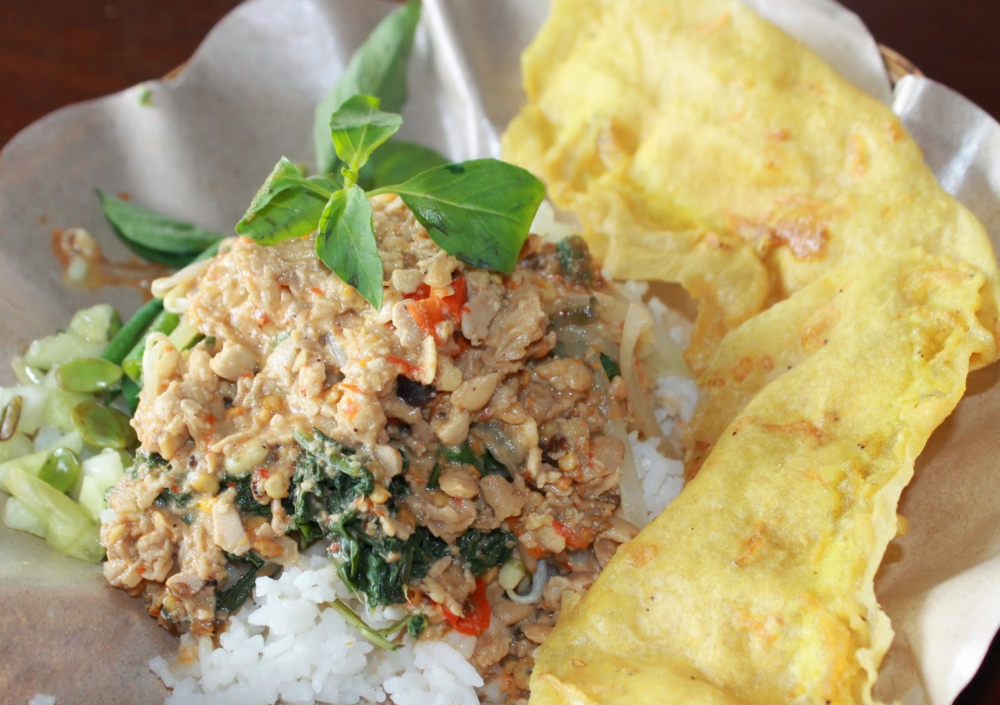

|
|
Homepage
Profile
Hometown
Local Food
Tourist Places
|
Soto Kediri
Like other regions in Indonesia, Kediri also has a typical dish in the form of soto.
Meanwhile, what differentiates Kediri soto from other soto is the use of coconut milk in the yellow sauce.
For the filling itself, Kediri soto usually uses free-range chicken mixed with various spices such as turmeric, ginger, lemongrass, pepper, garlic and shallots.
Takwa Tofu
Tofu is one of the typical foods of Kediri. In fact, Kediri is so popular that it has the nickname the City of Takwa Tofu.
It is indeed a legendary food in Kediri because it has been around for hundreds of years. Until now, takwa tofu is still made based on ancient recipes.
The aromatic itself comes from dried pekak flowers which are mixed with boiled water to make tofu.
The ingredients for making this tofu use quality soybeans which are boiled with salt and turmeric. The mixing process with turmeric is what makes this tofu have a yellow color.

Pecel Tumpang
Every region in East Java is synonymous with pecel, Kediri is no exception. What differentiates pecel in Kediri compared to pecel in general
is the use of tumpeng chili sauce to replace peanut sauce. This tumpeng chili sauce is made from tempeh mixed with various spices
such as chilies, bay leaves, galangal, shallots and shallots. After that, this chili sauce is added with salt, sugar and coconut milk.
Gethuk Pisang
Gethuk is not Kediri’s original food. However, what differentiates the gethuk in Kediri from gethuk in general which is made from cassava is that it uses bananas.
It is said that bananas were the favorite snack of Princess Sekartaji, a princess from the time of the Kediri Kingdom.
Meanwhile, the typical Kediri gethuk banana food uses the jackfruit plantain type in the manufacturing process.
The king jackfruit type of banana is used in making the typical Kediri gethuk banana dish because its texture is relatively dense.
To make it, bananas must be steamed and then mashed until smooth. After that, mix it with various complementary flavors until it becomes gethuk.

Bekicot Satay
From the name alone, you can guess that this typical Kediri food is made from grilled snail meat.
The method for making it is more or less the same as chicken satay, goat satay or beef satay. Snail meat is skewered with skewers then grilled over charcoal.
The snails used for satay are clean and slime-free so they are safe to eat. The chewy texture and delicious taste can be an option when on a culinary tour in Kediri.
|